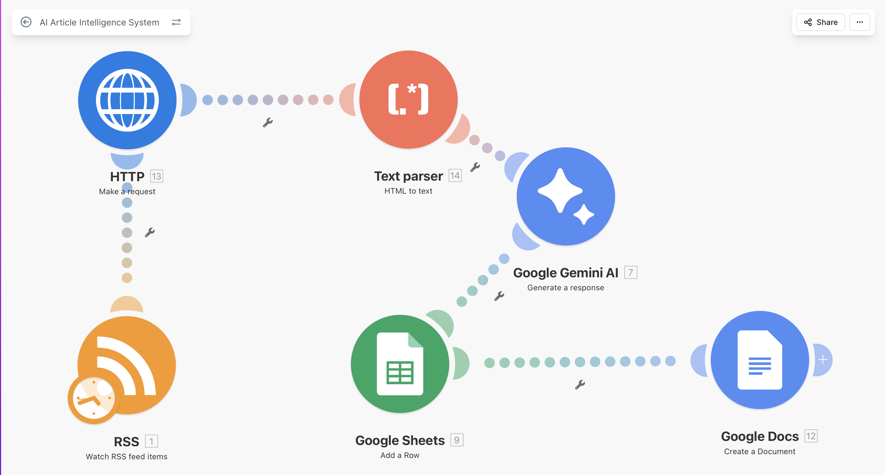

Automated system that transforms raw online content into structured, actionable business intelligence in real-time.
This system continuously monitors RSS feeds (e.g. TechCrunch), retrieves full article content, and uses AI to convert unstructured information into clear, structured insights.
Instead of manually reading articles, businesses receive summarized intelligence, categorized data, trend detection, and actionable signals — automatically.
Fully automated workflow built in Make.com. No manual input required — the system runs continuously.
